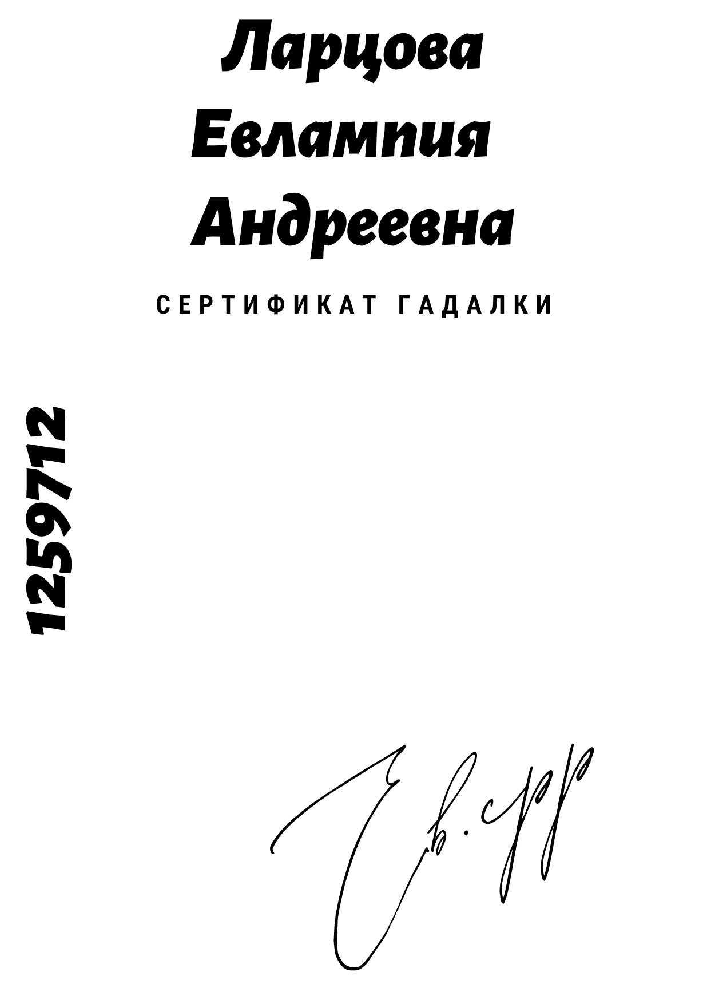
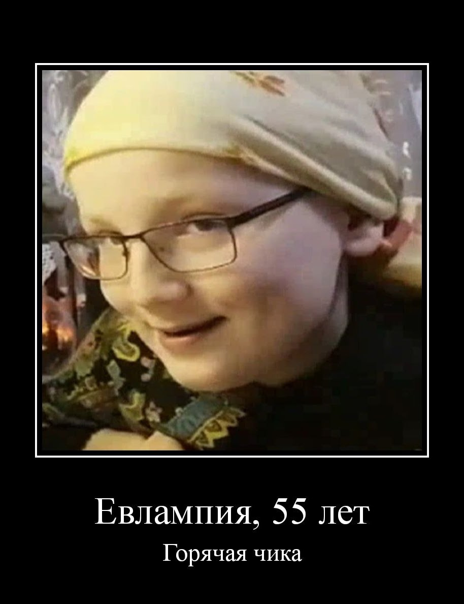

Серии временно недоступны
Часть серий скрыта для прохождения модерации в связи с требованиями ст. 6.21 КоАП РФ, ст. 230.3 УК РФ. Отдельные сцены подлежат цензуре и будут удалены. Следите за обновлениями в Telegram.
добрая и злая гадалка
Веб-сериал о гадалке Евлампии — предсказания, сезоны и архивные серии. Предсказывает будущее по шару, картам и телефону. Кто-то ей верит, кто-то смеётся, но равнодушным её не оставляет никто.
Новые видео
Все классические серии — три сезона, архивные выпуски и интервью. 30+ серий оригинального формата с предсказаниями, картами и шаром
Виртуальная коллекция артефактов из серий. У музея есть и реальный фонд в Санкт-Петербурге — чисто теоретически, по договорённости, можно попасть на личный показ предметов
Часть серий скрыта для прохождения модерации в связи с требованиями ст. 6.21 КоАП РФ, ст. 230.3 УК РФ. Отдельные сцены подлежат цензуре и будут удалены. Следите за обновлениями в Telegram.
О проекте
Евлампия предсказывает будущее по шару, картам и телефону
Все серии собраны в плейлистах на RUTUBE — основном канале
Новыми выпусками и новостями делятся в Telegram-канале
Галерея


Вопросы
Архив
Сайт-первенец больше не обновляется и остался здесь только на память. Можно зайти, всё посмотреть и изучить… может быть, даже найти пасхалку 👀
Связь
Проект создан студией і. По всем вопросам — пишите, ответим в течение дня